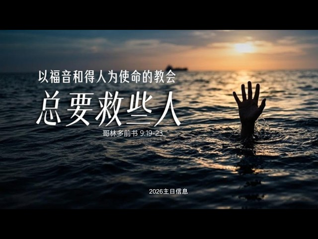
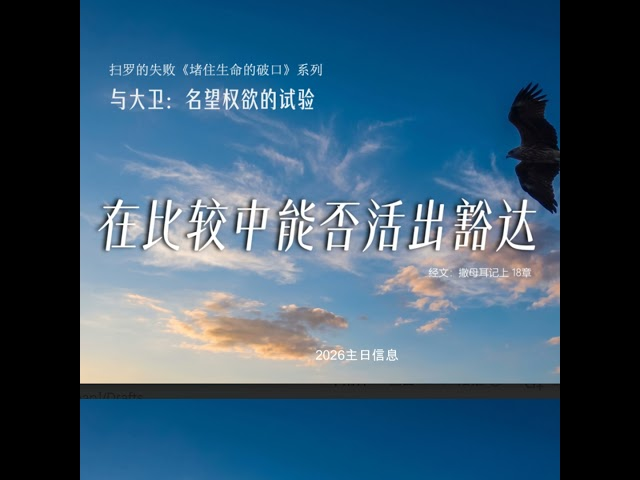

Theological Heritage · 典藏文献
信仰典藏与核心文献
系统译介与权威研读，提供原版注释、中英双语对照与教牧实践指引


Hymns & Worship · 诗歌宝藏
诗歌宝藏 · 华人教会传唱诗歌选集
精选适合华人教会、团契、诗班代代传唱的经典、现代诗歌。收录高清简谱、逐节大字歌词与纯正敬拜原声。
MEDIA & BROADCAST · 影音专区
讲台影音


Articles & Reflections · 真理思考
专栏文章与牧会前瞻
扎根圣经的系统神学思考、现实处境中的门徒生命与教牧随笔
撰拟中
神学释经 · 基督中心
道成了肉身：从文本字句到现实生活的信仰落地
福音不仅停留在观念和道理中，而是真实进入人的家庭、婚姻、关系与日常生活，使人在现实处境中经历基督生命的更新与掌权。
文稿审定中 · 即将上线 →
撰拟中
教牧反思 · 圣徒相通
在喧嚣世代建造主荣耀的教会：北美华人教会的牧养反思
这里所关注的，不只是知识与人数的增加，更是生命真实的改变；不只是个人属灵追求，更是教会群体的真实建造。
文稿审定中 · 即将上线 →
撰拟中
教会历史 · 门徒见证
和平、门徒生涯与信徒团体：重访再洗礼派信仰遗产
结合门诺弟兄会信仰宣言研读，探讨当代基督徒如何在社会与世俗环境中，活出纯粹、坚毅的和平非抵抗与门徒见证。
文稿审定中 · 即将上线 →
Training & Formation · 门徒装备
培训课程与门徒体系
体系化信徒造就、同工装备与提摩太培育计划
筹备中
基础门训系列
初信扎根与门徒生涯实操
面向初信圣徒与受洗学员的系统门徒训练，建立稳固的信仰基石与属灵生命习惯。
课程大纲规划：
救恩确据与重生 · 读经祷告之道 · 圣灵生活与试探 · 彼此相爱与团契 · 遵主使命与见证
教案筹备中 · 敬请期待 →
筹备中
系统释经系列
以基督为中心的圣经全景释经
贯穿新旧约 66 卷书的救赎历史脉络，帮助信徒掌握以基督为中心解经与实际应用的钥匙。
课程大纲规划：
创世与堕落 · 盟约与律法 · 先知与盼望 · 福音书基督 · 书信真理与终末得胜
教案筹备中 · 敬请期待 →
筹备中
同工领袖装备
提摩太培训：圣经教导与教牧陪伴
面向教会核心同工与小组长的体系化培育，强调生命品格、圣经真理阐述与牧养陪伴。
课程大纲规划：
同工品格与生命 · 圣经教导能力 · 属灵陪伴辅导 · 团队配搭服事 · 门徒倍增实践
教案筹备中 · 敬请期待 →